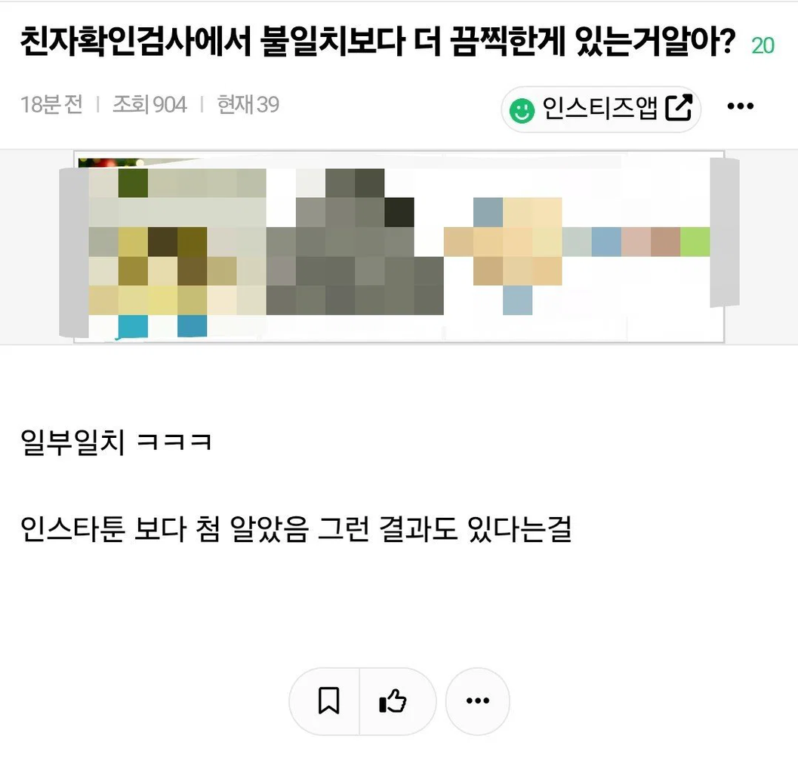

https://theqoo.net/square/4419256411

일부일치 = 내 배우자가 내 가족이랑 불륜한거.....
https://theqoo.net/square/4419256411

일부일치 = 내 배우자가 내 가족이랑 불륜한거.....
망가 좀 그만 봐..
일란성 쌍둥이면 오케이네
어? 이러면 진짜 일치 나와요?
당연하지 내 유전자가 둘로 나뉜건데
이야...
일부일처 vs. 일부일치
와 시발 외동이라 다행이다
외동이라해도 저게 나옴....
아 시발 잠깐만요
외동이 문제가 아닌데 ㅋㅋ
엄...능..
내 아들이자 동생인 아이
진짜 희귀 케이스가 있긴한데 ㅋㅋㅋㅋ 보통은..
쓰바 검색해보니 일란성 쌍둥이 형제로부터 불륜 했다면 친자검사로 나올 확률이 희박하다네 ㅋㅋㅋㅋ
복제인간과 다를바없으니
애초에 일란성 쌍둥이는 클론임
생각해보면 궂이 똑같이 생긴 사람이랑 바람필 필요가 있을까?
urakan작가의 아버지날
쌍둥이는 어떻게 되냐 저번에 자기 몸에 없어진 형제에 불알꺼라 자기하고 친자가 아니라 그랬는데
어어 나 이거 야동에서 봤어
ㅋㅈㄹㄴ
선제 이 개페도새끼